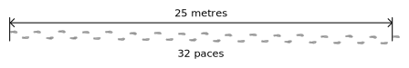

Compass and Pace Traverse Surveying
This tool assists traverse survey exercise data collection, graphing, and error illustratation.
While the activity focuses on the use of compasses and pacing to measure angle and distance, other tools could be used.
The contribution of this tool aims to ease the graphing and illustration of error in traverse surveying. This exercise should not replace the process of practicing trigonometric calculations and graphing data, but supplement it. See suggested uses for the tool in the Help tab.
Follow the instructions below for the activity.
Instructions
The situation. You only have a compass (or no GPS reception) and would like to record the location of other features relative to a chosen point (e.g., a tree, rock cairn, or geodetic benchmark).
A benchmark is a good point to start such an activity, but not necessary.
A benchmark is a marker, often made of metal, with an accurately known location according to a specific geographic coordinate system (i.e., a system of locating relative points for an area).
The benefit of using a geodetic benchmark is that the data collected in this exercise becomes georeferenced and can then be exported into a GIS program and be tied to a other geographic data.

Dealing with error. For this exercise we will be using a compass and pacing. A pace, in this activity, is using the following definition. When walking, a pace is one step or the distance between one foot and the other, at a consistent point (e.g., the tip or heel of the feet). See the adjacent diagram.
Other pacing definitions exist. Regardless of which 'pace' definition you use, it is important to specify to your colleagues which your are using.
For this activity we will begin by measuring your pace length and error percentage. This requires doing a few trials.
Note that as pace lengths vary by person only the person that has calculated their pace length (and error) should be completing the paces in the main activity.
Compass directions are wrong in most places (and time), but to varying degrees. Compass bearings/directions follow magnetic fields across the surface of the earth that differ in heading to true north. True north is the northern point at which the the earth rotates around its axis. It is used by geographic and projected coordinate systems to orient points relative to one another. A conversion is almost always required between magnetic north and true north. Additionally, the magnetic field is constantly (slowly) changing and can have large declinations. For example, a large part of Brazil has a declination of -20° or greater.
It is therefore recommended or even necessary to know the local magnetic declination when using a compass. Magnetic declination is the angle difference between the direction of the earth's northern axis of rotation and the direction the local magnetic field is aligning a compass's needle.
Some compasses allow you to compensate for magnetic declination. Alternatively you can compensate for it manually. Remember that the given magnetic declination is the error, and therefore you must compensate by inversing the magnitude/sign. So if I take a compass reading in Trier, Germany, of 140° and the local magnetic declination is +2.7° then the corrected reading is 137.3°. In Cape Town, South Africa, a similar compass reading of 140° with the given magnetic declination of -25.7° yields an adjusted reading of 165.7°.
Magnetic declination in Australia in 2020 (Source: NOAA/NCEI and CIRES). While magnetic declination as of 2020 was about -2° in Perth, it was about +12° in Melbourne. The figure is not indicating the direction of the magnetic field.
Create a new project
Select a project below or create a new one.
Projects allow you to save multiple traverses.
Select an existing project
Calculating your error
Preceeding traverse measurements relative to a bench mark it is necessary to calculate your error in distance and direction measurements.
Distance error
Depending on your means of measuring distance you will have a different error rate in your measurements. Using paces will have more error than a tape measure for example.
Do you already know your pace distance and error percentage?
Pace measurement exercise
To calculate your pace and distance measurement error you must complete pacing trials between points of known distance.
Walk repeatedly between points of known distance, submitting the number of paces you took to complete the distance.
An example pacing trial of 32 paces for a distance of 25 metres. 
Direction / Azimuth error
The azimuth is the compass direction. Compass direction measurements also have error.
While distance error is percentage based, azimuth error is value based.
The provided error value for compass readings will be allocated to each side of measurements to estimate possible error.
Magnetic declination error
As outlined in the introduction, compasses measurements have error specific to their location used.
Specify below your local magnetic declination value. This will be applied to your azimuth measurements.
This is optional as you can compensate for this in other ways.
You may also change this later and your recorded data will adapt.
Compasses point to magnetic north, not true north. Your local difference is called the magnetic declination.
Begin survey traverse
The area below represents your field space. The triangular marker in the centre is your starting benchmark - a known point that you will base your measurements upon.
Select a benchmark or station to see possible operations.
Target is of type:
Edit measurments to the selected station.
Station type:
Click on another point/station to create a wall to it.
Click the other benchmark that represents the same location. Error correction will be applied.
Export
All the data will be exported in GeoJSON format, directly visible in QGIS or compatible GIS. Files are separated by feature type (e.g., points, lines, and polygons) as well as duplicated for measured (data entered) and corrected when closed traverses are completed. Data is georeferenced if northing and eastings are provided.
Note that the SVG figure/map will also be exported as is currently displayed - you may wish to (de)activate CTEC.
You will still need to define your projection coordinate system in your GIS to complete the georeferencing.
Exported data viewed in QGIS with a base map provided by © OpenStreetMap contributors. Red features are raw measurements. Green features are through closed traverse correction. Multiple exports are displayed to show magnetic declination compensation (in blue).
How to use this resource
This application is meant for use in a field surveying course to supplement introductory concepts. Initial methods teaching of relative location measurement introduce the trigonometry (angle and distance measurements). This can be done with a compass and pacing, or alternatives.
This resource is designed for the following uses. Following a first compass and pacing traverse survey exercise, consisting of manual data recording (pencil and paper), calculation, and graphing of relative locations:
- for graphing collected measurements as a comparison to manual graphing
- a second survey exercise is completed but using this application to illustrate error accumulation
- to compare closed and open traverse error
- integrating collected data into a GIS for further analysis
More generally this resource offers a variety of uses:
- Explanation of pacing, azimuth, magenetic declination error
- Easy data entry and visualization in the field that can highlight recording erros while still in the field
- Easy graphing of data through export into a GIS
- A novel visualizing of error accumulation
Frequently asked questions
Closed traverse
How is the closed traverse error correction performed?
The error correction from a closed traverse is performed using Bowditch’s Rule.
What happens if there are multiple georeference benchmarks?
Error correction is only directly applied to the station legs between the original benchmark and the next found georeference benchmark. Other points are corrected based on the changes to their dependencies.
Data
Where is the data stored?
In your browser and it's only accessible by you. Learn more about localStorage.
How do I delete the project data?
You can simply clear the site data, similarly to how it is done for cookies or the cache in your browser.
Aspects to still develop:
- Measurements are currently using trigonometry (angle + distance), add a triangulation option (angle + angle).
Testing & demonstration data
Some automated inputs for testing or demonstration:
These will delete any existing project named 'test'.